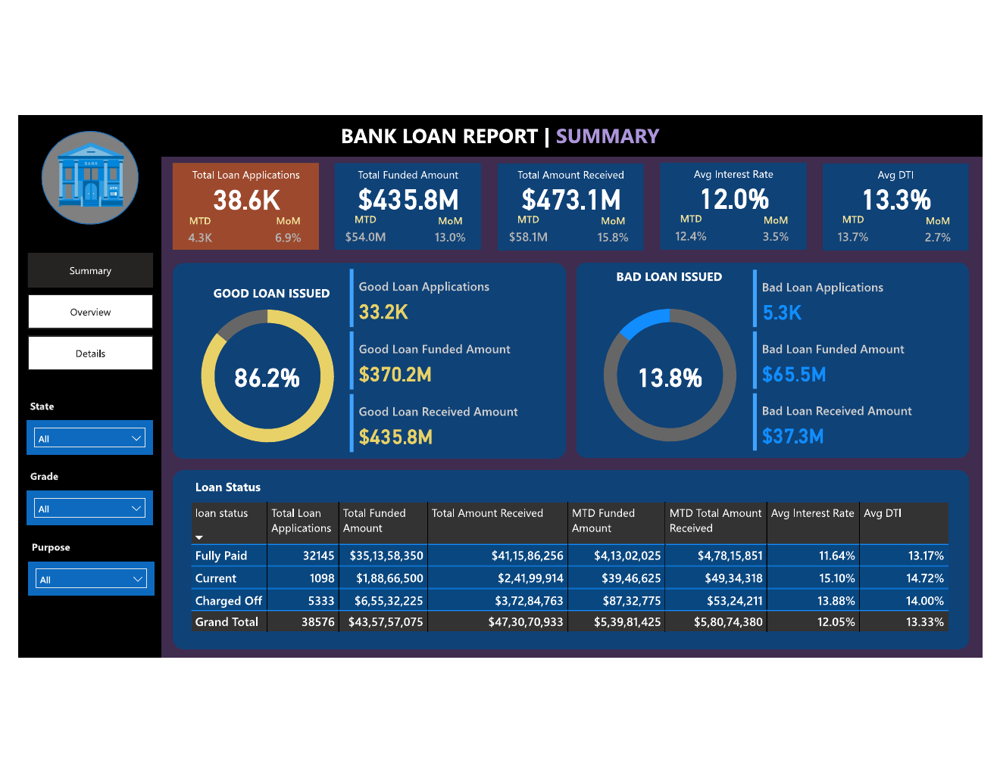
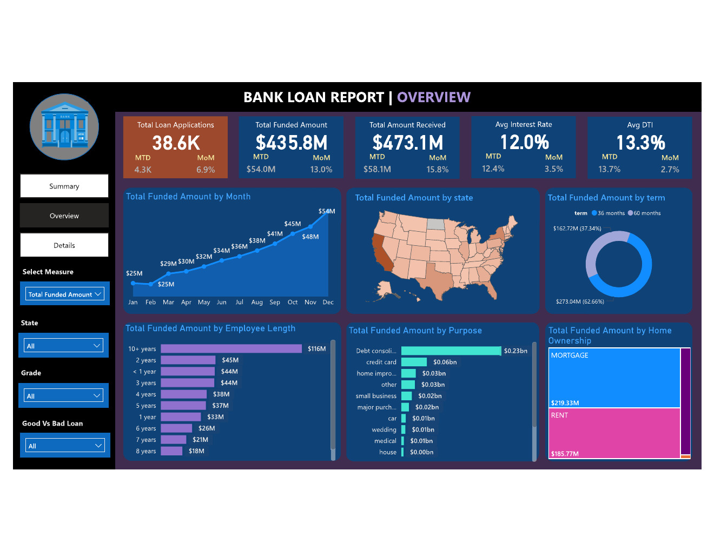
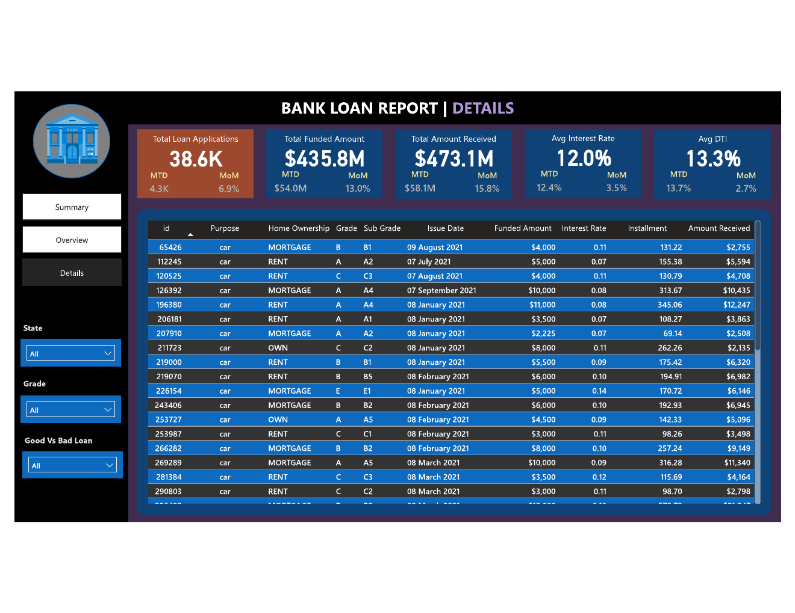

PAGE 01
Summary
High-level loan performance KPIs, good and bad loan indicators, and the November–December month-over-month comparison.

DATA ANALYTICS / FINANCIAL SERVICES
An analysis of loan applications, funded amounts, repayment performance and borrower characteristics using SQL Server and Power BI.

The objective was to analyse loan application data and build a Power BI report that helps review lending activity, funded amounts, amounts received, loan quality and borrower characteristics.
The work was organised into three report pages: Summary, Overview and Details.
The report is structured to move from headline performance to supporting breakdowns and detailed records.
High-level loan performance KPIs, good and bad loan indicators, and the November–December month-over-month comparison.
Breakdowns of lending activity by month, state, loan term, employment length, loan purpose and home ownership.

A consolidated view of loan-level information to support more detailed exploration of the records.

SQL Server was used to calculate key metrics and explore patterns across loan status, issue month, state, term, employment length, purpose and home ownership.
Download SQL queries ↗33,243 applications were classified as Fully Paid or Current using the project's definitions.
5,333 applications were classified as charged off.
Loan applications increased month over month from November to December 2021 in the dashboard comparison.
Tools: SQL Server, Microsoft Power BI.
Dataset source: Data provided through Topmate.io learning material. The dataset's underlying provenance and licence have not been independently verified; confirm before public redistribution.
Learning context: The dashboard was developed from scratch with a learning reference. This first version focuses on the report structure, SQL analysis and presentation of the results.
Scope: This is a portfolio learning project, not a credit-risk model or a real bank performance assessment.